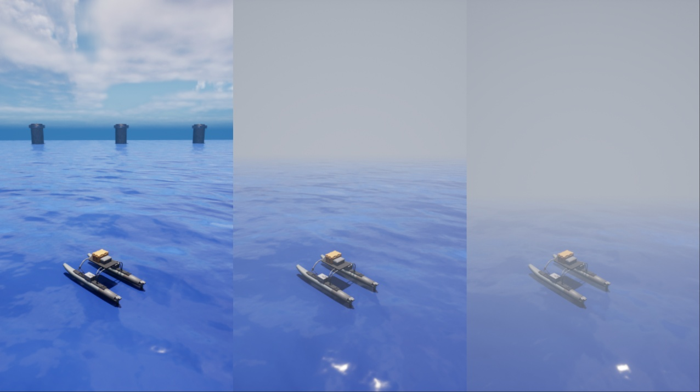

Air Fog Command
The Air Fog command allows you to adjust the fog effect in the environment, changing how far and how clearly objects can be seen above water. This can be useful for simulating different air clarity conditions.
Usage
You can configure the following parameters:
fogDensity: Controls the overall thickness of the fog. Range:
0.0 – 10.0fogDepth: Distance from the camera at which the fog effect begins. Range:
0.0 – 10.0(Default = 3.0)color_R: Red channel of the fog color. Range:
0.0 – 1.0(Default = 0.45)color_G: Green channel of the fog color. Range:
0.0 – 1.0(Default = 0.5)color_B: Blue channel of the fog color. Range:
0.0 – 1.0(Default = 0.6)
Programmatically
Here is an example of using the air fog command to achieve the visibility level shown in the middle of the image above:
with holoocean.make("...") as env:
while True:
env.air_fog(1) # sets the fog density to 1
Additionally, you can modify fog depth and color.
with holoocean.make("...") as env:
while True:
env.air_fog(
0.8,
fogDepth=5.0,
color_R=0.5,
color_G=0.5,
color_B=0.6
)
env.tick()
Note
For more information on how to use this command, please refer to the API Documentation:
AirFogCommand.
Note
To modify fog underwater, use the dedicated command instead. See Water Fog Command.